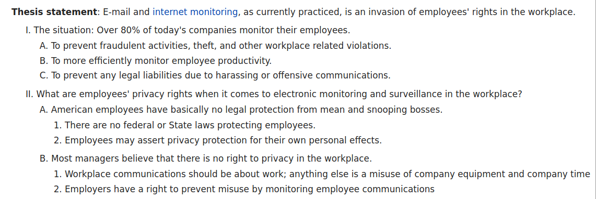

Jot - Just and Only Text
What it is
Jot is a (mostly) mark-up free markup language.
Jot files can have no markup codes, and be as easy to read as plain text, yet be converted to styled XML or HTML
It achieves this by using white-space as a marker. Whitespace is skipped over by the eye and is non-distracting, unlike markup codes.
A Jot document uses indentation to show the structure, this scheme is sometimes naturally used to show the structure of text, as below:

Jot uses the concept of a 'default' tag for each child node, which avoids most markup (e.g. the top level node is the document title). However other tags can be specified with a simple syntax.
What it's for
Jot's hierarchical structure means editors can be used as single page outliners (if they are configured to 'fold' sections based on indentation level).
Jot files work with an arbitrary schema, so it is a compressed form of XML, while Markdown etc. are abbreviated syntaxes for HTML.
The process for converting jot to an arbitrary output starts with the app Jot2xml which converts jot format to XML, the XML file is then processed using XSL. This gives a lot of flexibility - any output that can be produced by XSL can be produced with jot.
Jot can also be used as a templating system, by using multiple XSL files or XSL parameters.
Some of the things that can be done with jot+XSL include:
- produce arbitrary XML (e.g. open document format)
- produce plain text output
- make HTML
- make different formats from one file, e.g. ODF and HTML.
- variant files (i.e. generating one HTML document for the web and one for an intranet with different text in one place only)
- produce sets of similar files from a template and source files containing unique text, i.e. like a text macro system
Comparison with markdown
Compared to Markdown, jot is:
- harder to use you need a two stage process to make HTML from a jot file, vs one for Markdown
- harder to extend Markdown allows embedded arbitrary HTML. In jot to add a new tag type you have to update the schema and the XSL
- more powerful e.g. you can create HTML files with an arbitrary template in jot. For Markdown you would have to use an additional text macro system.
- more flexible a jot file can be converted to multiple outputs, e.g. Markdown, reStructuredText, json (you need to write XSL files to do these)
- stricter jot enforces a schema when it is converted to XML, meaning errors are caught immediately
How to use it
To create an HTML file from a jot file, first convert the jot file to XML by using the program jot2xml. Next convert that to HTML by using the file jotxml2html.xsl.
This XSL file is designed to work with the default (built-in) schema.
To customise the output, modify the XSL file.
Getting Started
- Download the jot2xml executable (available for Windows and Linux).
- Install an XSL processor.
- For Windows I recommend saxonica.
- For Ubuntu Linux you can run
sudo apt install libsaxonb-java. - The XSL processor should support XSLT 2.0
- Configure your text editor
-
Instructions for Vim, and Jedit are given in Editor settings.For other editors, it must:
- NOT silently replace tabs with spaces.
- use soft-wrapping only, i.e. does not insert line feeds
- save in ASCII or UTF-8
Ideally it should also:- indent wrapped lines at the start-of-line indentation level
- support 'folding' based on indentation level
- make spaces visible at the start of lines
- highlight jot syntax
- have other outliner features, such as 'hoisting'
- Convert your jot file to HTML
There are sample bash and .bat files to do this named convert-jot-to-html.bat and convert-jot-to-html.sh. You will need to update the paths in these files.
Writing JOT files (syntax)
Indentation
A jot file distinguishes separate types of text - shown with different tags in HTML - by the indentation level. Each line is indented by tabs, and this shows the structure of the document.
For example if the first line is not indented this is the title of the page. Any line indented by one tab are headings. text indented by three tabs is body text and anything indented further is shown in a smaller font.
This is a simple HTML page:
This is the page title this is tagged as <H1> this is tagged as <h2> this is tagged with <p>, it's normal body text another paragraph of body text this is shown in a smaller font still another <H2> heading
Which tag represents each level is specified in the 'schema', but can be overridden by using markup in the jot file.
Each paragraph ends up as a node in the xml output, surrounded by <p>.
Markup
Sometimes you want a different tag than the default, this is done using markup.
Pipe tags
To markup a block of text as being a tag, you can use the tag name followed by the pipe symbol '|', on a line of it's own.
The tag 'ul' represents an unnumbered list, so to show a list of items like this;
ul| a b c some more text
this is rendered as:
<ul> <li>a</li> <li>b</li> <li>c</li> </ul> <p>some more text</p>
note that the ul tag applies to the whole indented block, and that the default child tag for ul is li so there is no need for other markup.
More pipes
To tag a single line you can use a different syntax, that looks like
tag|line. For example:
em|some text to emphasise some more text
this will render as:
<em>some text to emphasise</em><p>some more text</p>
whitespace after a pipe symbol is ignored
Inline tags
If you don't want to make a separate line for a node, you can embed it in a line by using square brackets like this
first [em|text to emphasise] after
This is converted to:
first <em>text to emphasise</em> after
Attributes
A simpler way of adding a small subnode is the attribute style, like this
em class=my-class id=my-id|text to emphasise with class
This renders as:
<em class="my-class" id="my-id">text to emphasise with class</em>
Attributes are not a different type of node, just a different syntax. The above HTML will also be created by the following
em|[class|my-class][id|my-id]text to emphasise with class
and
em| class|my-class id|my-id text to emphasise with class
sometimes you want to show a tag in the attribute syntax without specifying the parent tag. In this case use '.' to mean the default tag. e.g.:
. class=my-class id=my-id|text to emphasise with class
This shows as:
<H2 class="my-class" id="my-id">text to emphasise with class</H2>
if <H2> is the default tag at that level.
Curly brackets
There is an abbreviated way of showing a subnode with the default tag. The text is put in curly brackets
like {this}. This is an abbreviated form of like [.|this]
This is convenient for tables, e.g.
table|
{{a}{b}{c}}
{{1}{2}{3}}
will create:
<table> <tr><td>a</td><td>b</td><td>c</td></tr> <tr><td>1</td><td>2</td><td>3</td></tr> </table>
You could also write this as:
table|{{a}{b}{c}}{{1}{2}{3}}
Escaping characters
| CHAR | ESCAPE SEQUENCE |
|---|---|
| [ | ~[, [lb], [left-brace] |
| ] | ~], [rb], [right-brace] |
| { | ~}, [right-curly] |
| { | ~{, [left-curly] |
| | | ~|, [pipe] |
| ~ | ~~, [tilde] |
| SPACE at beginning of line | "~ ", [SPACE] |
| TAB at beginning of line | "~\t", [TAB] |
| QUOTE in attribute contents | ~", [QUOTE] |
Note chars do not need to be escaped if they are not in a position to be interpreted as special chars. e.g. quote marks only need to be escaped if they are in attribute values.
There are no escape sequences for dots (.) or equals (=), therefore these can not be used in identifiers (tags), and "=" can not be used in attribute values.
The following always need to be escaped if literal chars: [,],{,},|,~
Writing JOT files (HTML)
The default schema will produce HTML when used with jotxml2html.xsl.
If the first line is not indented it is used as the page title.
Lines indented by one tab are tagged <H1>, 2 tabs <H2> etc up to <H4>. After 6 indents text is shown as <p> only.
Some useful tags
comment
nodes tagged comment are suppressed in the HTML
ul ol list num
ul makes an unnumbered list. ol makes a numbered list.
list can have a subnode of num which can take values ol, ul, numbered, or empty. The default is unnumbered
case when (variant files)
Text can be shown only in some outputs of the XSL by using the tags "when" and "case", e.g.:
case when=web| Download [a r=url|here]
If the XSL file is processed with a parameter of 'choose' containing the text 'web', then the node will be output, otherwise it will not.
For example:
saxonb-xslt -s:"$1.xml" -xsl:"jotxml2html.xsl" -o:"$filename.html" choose=weba r
a makes an HTML a tag and r an HREF attribute. Example:
[a ~r=http://github/t-d-k/jot|Just and Only text]
citation
This creates footnotes. Example:
Which is shown in Pew [citation link=true|http://www.pewresearch.org/url].See jotxml2html.xsl.
table header row cell
Creates HTML tables, e.g.
table|header|{option}{meaning}
{ {-o <filename>}{output file} }
{ {-s <filename>}{schema file, can be omitted} }
{ {-k}{do not check schema} }
The default child of table is row, and the default child of row is cell
LEV
This is the default tag for plain text, the HTML tag produced depends on the indent level
Others
Jot2xml
Expects its input in UTF-8. Both Windows and Unix line endings are supported. The output is in UTF-8, using Unix line endings.
| option | meaning |
|---|---|
| -o <filename> | output file |
| -s <filename> | schema file, can be omitted |
| -k | do not check schema |
Writing schemas
Schemas are themselves jot files. Each top level node represents a tag, and the subnodes represent child tags allowed. A tag of 'default' means that is the default child tag, and text tagged 'comment' is ignored e.g.:
ol default|p comment|common to all tags id when
means that 'id', 'p' and 'when' are the only permitted child tags of ol', and the default is 'p'.
The schema must contain 'xml' as a node, which is the document as a whole. Nodes under this are top level tags (i.e. not indented)
The schema for schema files is:
xml default|tag comment tag default|subtag comment default default subtag comment comment-text comment| no child nodes allowed under sub tags subtag comment| no child nodes allowed under comment text comment-text
However when parsing a schema, the schema of the schema is not checked